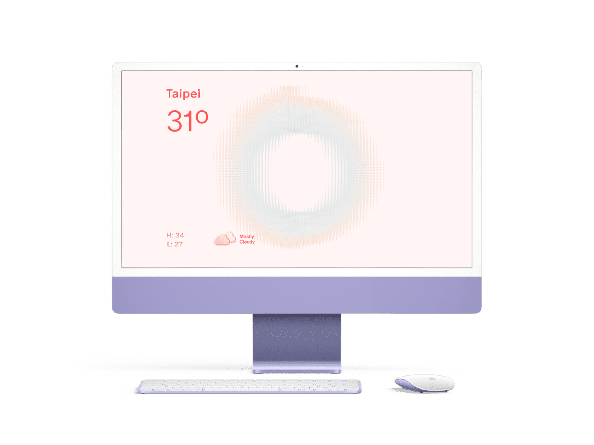
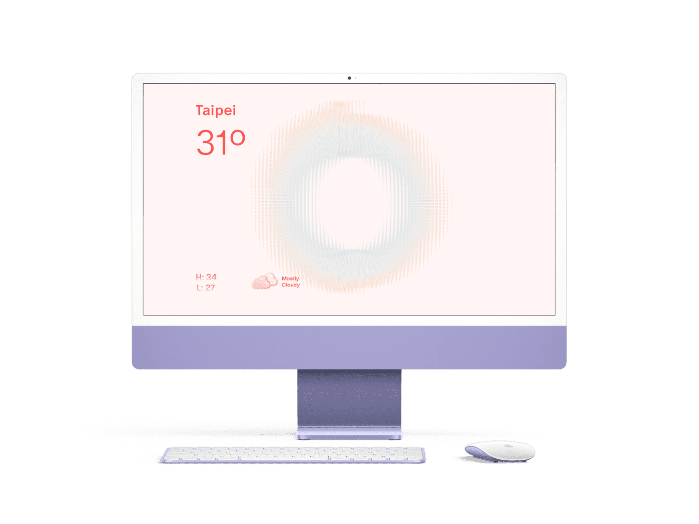

Controls
Effects:
- glassFilter: Apply sliced glass effect
- toggleBlur: Enable Blur effect
- ringBlur1,2,3: Amount of the blur effects
- bands: Amount of the sliced pieces of glass effect
- distortion: Degree of distortion of glass effect
Temperature (Outer-Ring):
- angleStep: Density of the temperature lines
- lineThickness: Thickness of temperature lines
- gap: Fine Tune for the gap between lines
- tempRingSize1,2,3: Size of the rings
- tempRingInnerSize: Size of inner part of all the rings
- tempRingPow: Degree of how drastic the size of the rings are
Precipitation (Inner-Ring):
- circleSize: Size of the blue circles
- percepGap: Size of the Gap in-between each row of circles
- perecepsAngleStep: Density of the circles
Position / Movement
- movement: Enable ring movements
- ringGap: gap between precipitation ring and temperature ring
- pos[1,2,3][X,Y]: position for each ring along X,Y axes
Anatomy


 
